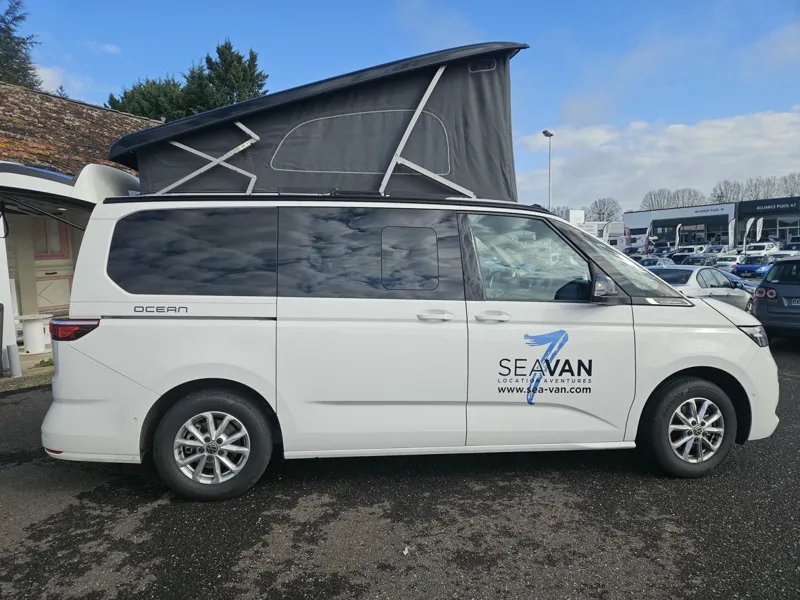

VOTRE MAISON SUR LA ROUTE
Volkswagen California T7
Le van iconique pour explorer en famille ou entre amis.

Prêt pour votre escapade
- 4 places assises et 4 couchages
- Cuisine avec réfrigérateur, évier et un feu au gaz
- Boîte automatique et caméra de recul
- Toit électrique et chauffage stationnaire
- Douche d’appoint extérieure non chauffée
- Table extérieure, deux chaises et auvent
23 ans minimum · 2 ans de permis minimum.
Caution : 1 800 €. Conditions à confirmer avec l’agence.